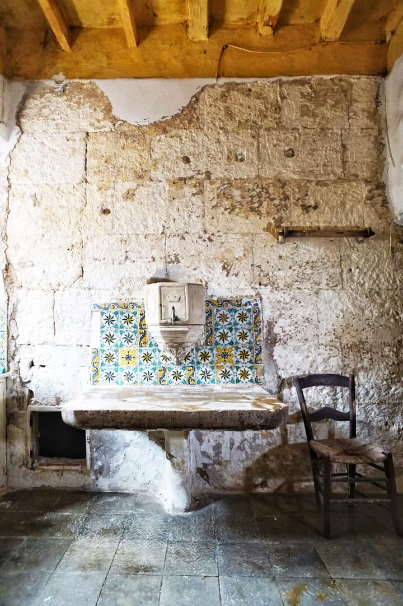
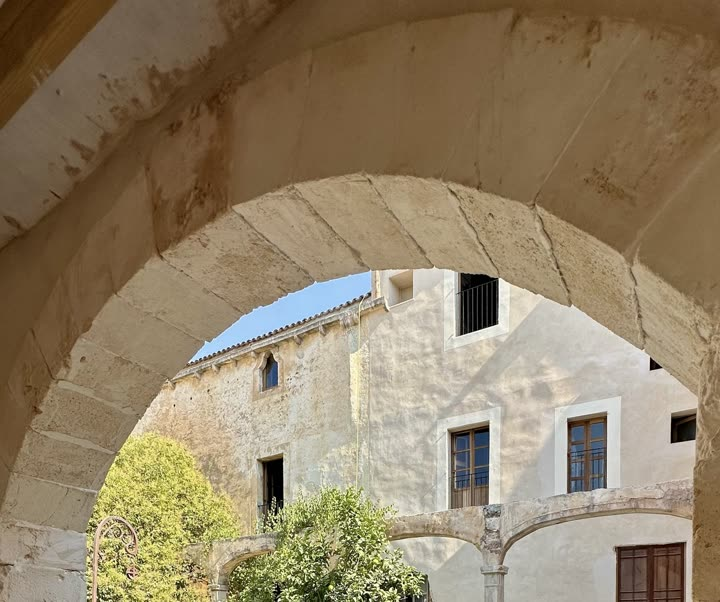
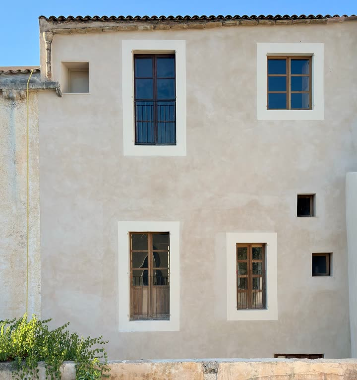
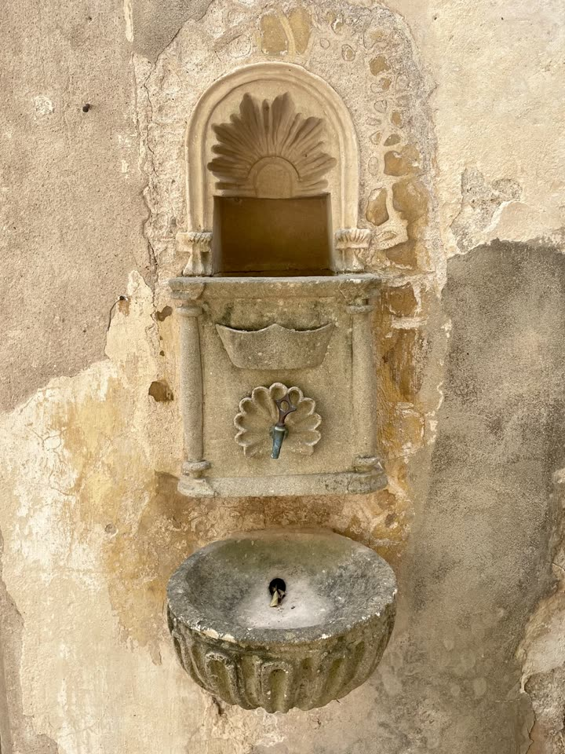
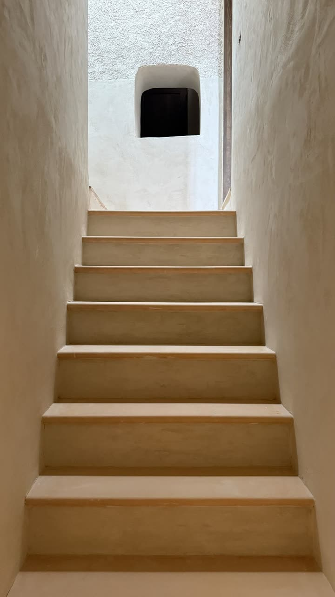
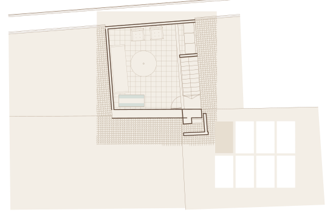
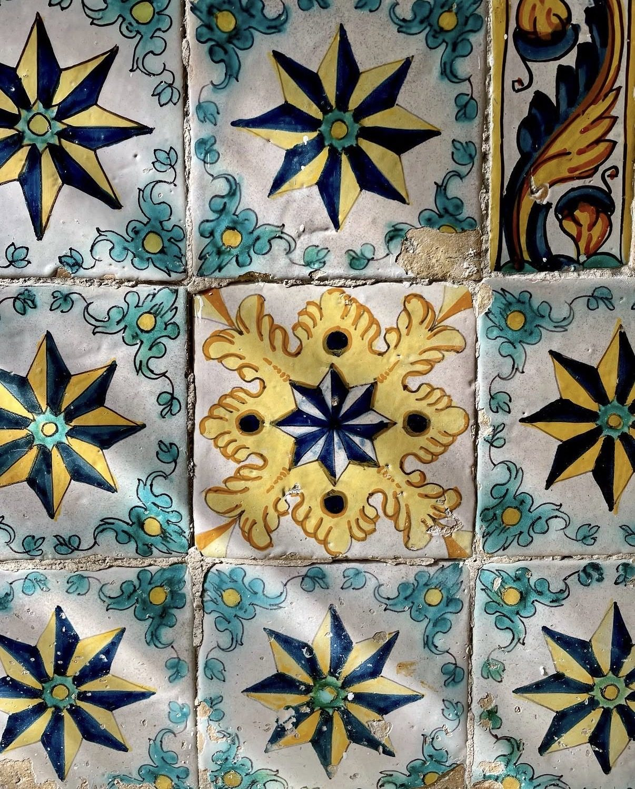
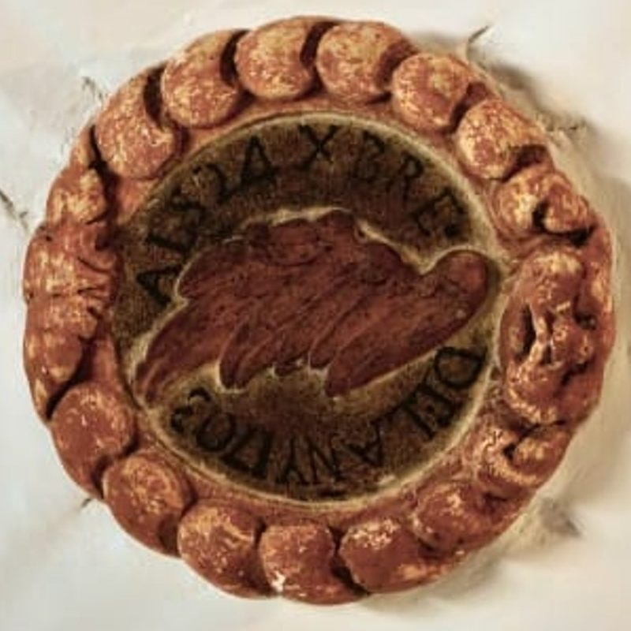
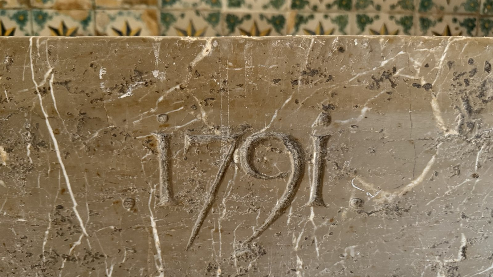

A newly renovated 8 bedroom town house in the heart of Felanitx, Mallorca

The old kitchen
The courtyard Eight bedrooms
The house
Stone fountain Painted tiles Bathrooms
The stairFeatures
Specification
- Bedrooms
- 8
- Bathrooms
- 8
- Built
- 700 m²
- Plot
- 393 m²
- Floors
- 5
- Garages
- 2
- Estimated Completion
- May 2027
The house
- 8 bedrooms and 8 bathrooms
- About 700 m² built across five floors
- 393 m² plot in the historic centre of Felanitx
- Full renovation, completing in 2027
- Two garages for off-street parking
- Option for separate self-contained 1 or 2 bedroom apartment for guest or staff accommodation
Living spaces
- Entrance hall, sitting room, TV room and study
- Old and new kitchens with grand fireplace
- Large dual aspect gallery space to first floor with balcony overlooking street
- Guest WC on the ground floor
Bedrooms and bathrooms
- Four bedrooms on the first floor, three with en-suite bathrooms
- A further four bedrooms on the second floor, two with en-suite bathrooms and a further family bathroom
- Walk-in showers with handmade terracotta and stone floor tiling
- Two freestanding bathtubs
- Electric underfloor heating in the bathrooms
Amenities
- Private courtyard with a swimming pool
- Stone colonnade with outdoor dining area
- Separate outdoor kitchen with BBQ and wood fired oven
- Wine cellar
- Lemon tree, clementine tree and a vine
- Sun and shaded terraces beside the pool
- Roof terrace with panoramic views
- Irrigation system fed from underground rainwater storage tanks
- Covered vaulted seating area
- Separate external shower and WC serving garden
Materials
- Original timber beams and local stone walls
- Lime-plastered walls
- Handmade terracotta floor tiles by Can Benito
- Handmade stone sinks by d’Aigo Mallorca
- Wooden shutters and deep window reveals
- Brushed bronze taps and fittings
Systems
- Air source heat pumps for heating and cooling throughout
- Heat pump cylinders for domestic hot water
- Whole-house water filtration and softening
- Mains water storage and pressurisation system
- Three-phase electricity with provision for electric vehicle charging up to 27 kW
- Fibre internet up to 2 Gbit/s
- Multiple Wi-Fi 7 access points throughout
- Energy rating To confirm
Photos
The entrance
Photographs taken during the final stage of renovation. Finished photography will follow.
Floor plans
Layout
 Garage15.0 m²
Storeroom24.4 m²
Plant room9.4 m²
Bodega
Garage15.0 m²
Storeroom24.4 m²
Plant room9.4 m²
Bodega
- RoomDimensionsArea
- Storeroom— × — m24.4 m²
- Garage— × — m15.0 m²
- Plant room— × — m9.4 m²
- Bodega— × — m–
 Study18.0 m²
TV room18.4 m²
Entrance hall19.6 m²
Dining room18.5 m²
Formal dining room16.4 m²
Kitchen16.5 m²
Storeroom6.8 m²
Pantry8.5 m²
WC
Sitting room24.6 m²
Study18.0 m²
TV room18.4 m²
Entrance hall19.6 m²
Dining room18.5 m²
Formal dining room16.4 m²
Kitchen16.5 m²
Storeroom6.8 m²
Pantry8.5 m²
WC
Sitting room24.6 m²
- RoomDimensionsArea
- Sitting room— × — m24.6 m²
- Entrance hall— × — m19.6 m²
- Dining room— × — m18.5 m²
- TV room— × — m18.4 m²
- Study— × — m18.0 m²
- Kitchen— × — m16.5 m²
- Formal dining room— × — m16.4 m²
- Pantry— × — m8.5 m²
- Storeroom— × — m6.8 m²
- WC— × — m–
- Pool— × — mTo confirm
 Formal dining room23.4 m²
Living room18.3 m²
Bedroom26.7 m²
Bedroom
Main bedroom15.7 m²
Bathroom
Bathroom
Kitchen5.7 m²
Living room15.8 m²
Dressing room5.7 m²
Main bathroom5.3 m²
Shower room2.6 m²
Formal dining room23.4 m²
Living room18.3 m²
Bedroom26.7 m²
Bedroom
Main bedroom15.7 m²
Bathroom
Bathroom
Kitchen5.7 m²
Living room15.8 m²
Dressing room5.7 m²
Main bathroom5.3 m²
Shower room2.6 m²
- RoomDimensionsArea
- Bedroom— × — m26.7 m²
- Formal dining room— × — m23.4 m²
- Living room— × — m18.3 m²
- Living room— × — m15.8 m²
- Main bedroom— × — m15.7 m²
- Kitchen— × — m5.7 m²
- Dressing room— × — m5.7 m²
- Main bathroom— × — m5.3 m²
- Shower room— × — m2.6 m²
- Bedroom— × — m–
- Bathroom— × — m–
- Bathroom— × — m–
 Bedroom9.5 m²
Bedroom15.2 m²
Master Suite32.1 m²
Bedroom22.5 m²
Living room15.7 m²
Dressing room6.4 m²
Bathroom8.0 m²
Stair6.0 m²
Bathroom5.6 m²
Bathroom4.4 m²
Landing9.5 m²
Bedroom9.5 m²
Bedroom15.2 m²
Master Suite32.1 m²
Bedroom22.5 m²
Living room15.7 m²
Dressing room6.4 m²
Bathroom8.0 m²
Stair6.0 m²
Bathroom5.6 m²
Bathroom4.4 m²
Landing9.5 m²
- RoomDimensionsArea
- Master Suite— × — m32.1 m²
- Bedroom— × — m22.5 m²
- Living room— × — m15.7 m²
- Bedroom— × — m15.2 m²
- Bedroom— × — m9.5 m²
- Landing— × — m9.5 m²
- Bathroom— × — m8.0 m²
- Dressing room— × — m6.4 m²
- Stair— × — m6.0 m²
- Bathroom— × — m5.6 m²
- Bathroom— × — m4.4 m²

Roof terrace- RoomDimensionsArea
- Roof terrace— × — mTo confirm
Indicative plans, not to scale. Room sizes are approximate and the final layout may differ.
The house
A unique restoration
Can Vaquer is a traditional townhouse in Felanitx, a market town in the south-east of Mallorca. The renovation keeps what made it: tall rooms under dark timber beams, walls of local stone, deep window reveals with wooden shutters, and handmade terracotta floors laid on the diagonal.
The new work is quiet and exact. Walls are finished in lime plaster, bathrooms are lined in glazed handmade tiles and pale stone, and the taps are brushed bronze. Out in the courtyard, a sandstone arcade, a lemon tree, a clementine tree and a vine surround the new pool.
Renovation in progress. Completion expected May 2027
- Piedra de BinissalemGrey limestone quarried at Binissalem
- Paret en verdTraditional limestone wall constructed with earth mortar
- Marès sandstoneArches and arcade around the courtyard
- Lime plasterBreathable, hand-trowelled walls
- Timber beamsOriginal ceilings, kept and restored
- Terracotta floorsHandmade tiles by Can Benito, laid on the diagonal
- Glazed handmade tilesShowers and bathroom walls
- Brushed bronzeTaps, shower sets and bath filler

History
Lost in time
The earliest known record of Can Vaquer dates back to the ownership of Miquel Vaquer and Catalina Truyol in 1697. The house was featured in the 2016 book Cases i posades de Mallorca: Volum 2 written by Tomàs Vibot Railakari and José Villalonga Morell.
“Can Vaquer is a magnificent paradigm of real estate in the hands of a Felanitx family with an important assortment of lands scattered throughout the municipality and with a notable presence of ecclesiastical owners. In parallel to this situation, the Vaquer family were associated with the owners of the Son Gaià estate, which provided a series of revenues that were reflected in the historic scale and fabric of the building.”
For more than three hundred years it belonged to one family, the Vaquers and their descendants, and much of the house still shows how life was lived in a Mallorcan town in the eighteenth century.
Other remarkable features include two painted sundials, a barrel-vaulted laundry with a small oven for heating water, a hexagonal stone cistern head in the courtyard, and a late-medieval openwork rose window, possibly rescued from a sixteenth-century Palma courtyard and set into a wall.
- 1600s
The notary Antoni Nadal lives in the house, and the street is known as Carrer Antoni Nadal after him.
- 1697
First record of the Vaquer family in the house: Miquel Vaquer and his wife Catalina Truyol.
- 1703
The entrance hall receives its wide cross vault, with a keystone dated 24 December 1703.
- 1736
The house passes from the priest Nicolau Vaquer to his brother Sebastià.
- c. 1750
Two large sundials are painted on the south and west façades, possibly by Joan Oliver Rosselló, a Felanitx priest who wrote a manual on sundials in 1757.
- 1750
An inventory of the house lists the entrance, the kitchen, the stable and the pantry, with vineyards held across the municipality.
- 1791
The stone kitchen sink is carved with its date, beside the great fireplace and Catalan polychrome tiles.
- 1890
The street, once Carrer de l’Arraval, is renamed after Joan Antoni Puig Montserrat, Bishop of Puerto Rico.
- 2000s
The Vaquer family’s descendants keep the house until the early twenty-first century.
- 2027
A full restoration is completed.

The rosette of 1703
The keystone of the entrance vault carries a carved rosette inscribed ‘ALS 24 XBRE DEL ANY 1703’, or 24 December 1703.
‘XBRE’ is the abbreviation for December, from the Latin for ‘tenth month’, because the Roman calendar began in March. At its centre is a wing motif that can be attributed to the Nadal lineage. The land registry shows that in the seventeenth century the house was lived in by a notary, Antoni Nadal, and that Carrer del Bisbe Puig was once known as Carrer Antoni Nadal after him.
Keystone of the entrance vault, 24 December 1703
The kitchen sink of 1791
The old kitchen survives almost intact. Its stone sink, carved from a single piece and set under a semicircular arch, is carved with the date 1791, beside a great built-in fireplace and wall panels of Catalan polychrome tiles with wind-rose and acanthus motifs.
The bodega of 1772
Description to follow
Sources: historic report by Neus Serra Vives and Maria Ortiz Amengual (2022), with sundial notes by Joan Serra Busquets; Tomàs Vibot and José Villalonga, Cases i posades de Mallorca, vol. 2 (2016).
Location
Felanitx
Felanitx is a working Mallorcan town in the south-east of the island, known for its Sunday market, its vineyards and wineries, and the hilltop sanctuary of Sant Salvador that looks out over the plain to the sea.
The harbour and coves of Portocolom are a short drive away, and Palma and its airport are within easy reach for year-round living.
- PlaceDistanceDrive
- Portocolom≈ 12 kmTo confirm
- Palma airport≈ 45 kmTo confirm
- Palma≈ 50 kmTo confirm
- Nearest beaches≈ 12 kmTo confirm
Distances and drive times are approximate, by road.
Around Felanitx
Local highlights
- Photo to addMarketSunday marketStalls fill the squares around Sant Miquel every Sunday morning
- Photo to addChurchSant MiquelThe 16th-century parish church at the heart of town
- Photo to addLandmarkSantuari de Sant SalvadorHilltop sanctuary with views across the plain to the sea
- Photo to addLandmarkCastell de SantueriCastle ruins on a rocky spur of the Serres de Llevant
- Photo to addWineryÀnima NegraCelebrated Callet reds from the Son Burguera estate
- Photo to addWineryVins Toni GelabertOrganic and biodynamic wines, tastings by appointment
- Photo to addRestaurantBatecMallorcan cooking with a modern touch on Plaça d’Espanya
- Photo to addRestaurantEstragonMediterranean dinners and a list of Felanitx wines
- Photo to addBarPAX GastrobarSharing plates, good wine and occasional live music
- Photo to addBeachPortocolomFelanitx’s natural harbour, lined with fishermen’s boathouses
- Photo to addBeachCala MarçalSandy cove just south of Portocolom
- Photo to addBeachCala sa NauSheltered cove with clear turquoise water
- Photo to addBeachS’Almunia / Caló des MoroTurquoise coves between pine-clad cliffs near Santanyí
- Photo to addLandmarkCan LisJørn Utzon’s cliff-top house above the sea at Portopetro
- Photo to addBeachCala MondragóSandy coves within the Mondragó natural park
- Photo to addHarbourCala FigueraFishing village around a narrow, fjord-like inlet
Viewings
Arrange a viewing
Viewings are by appointment only. Send an enquiry and we will be in touch to arrange a time.